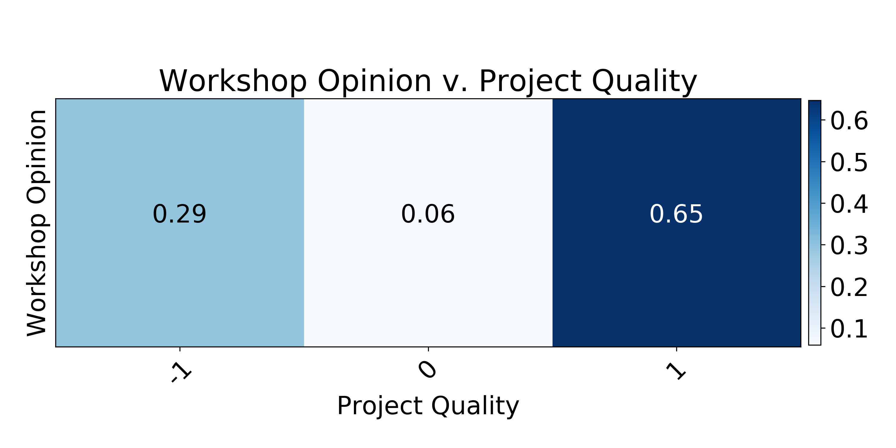
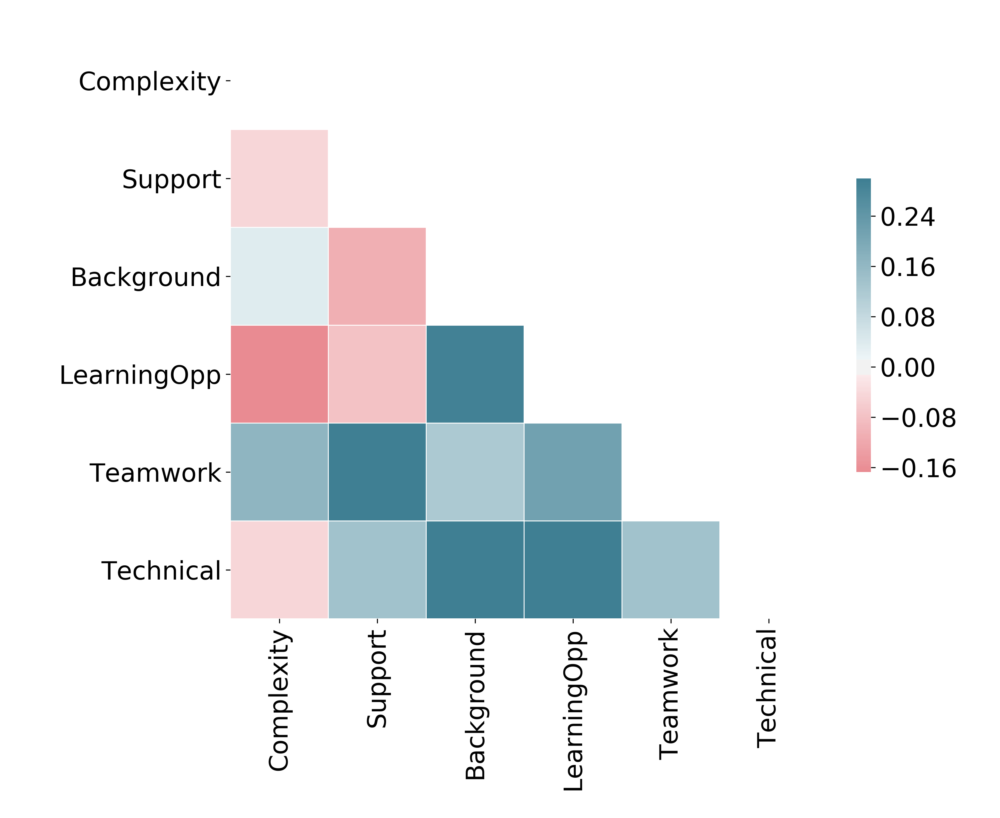
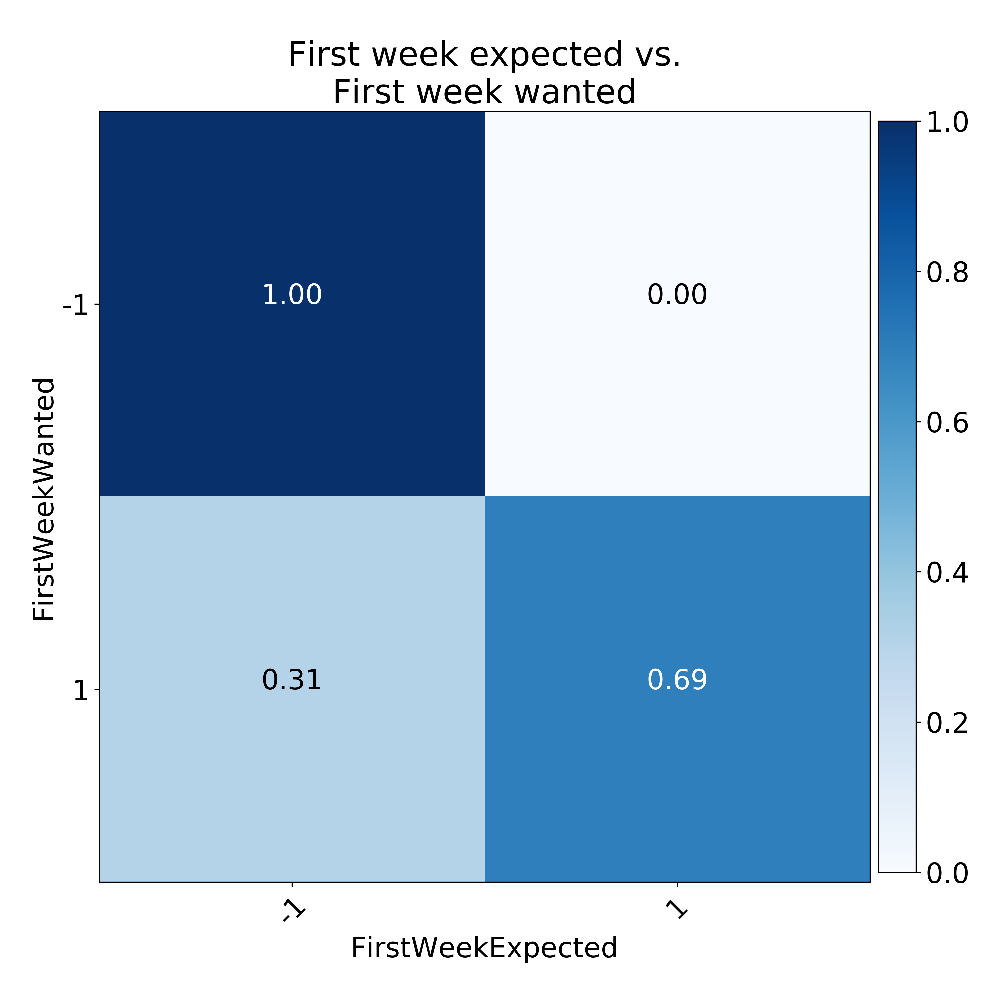
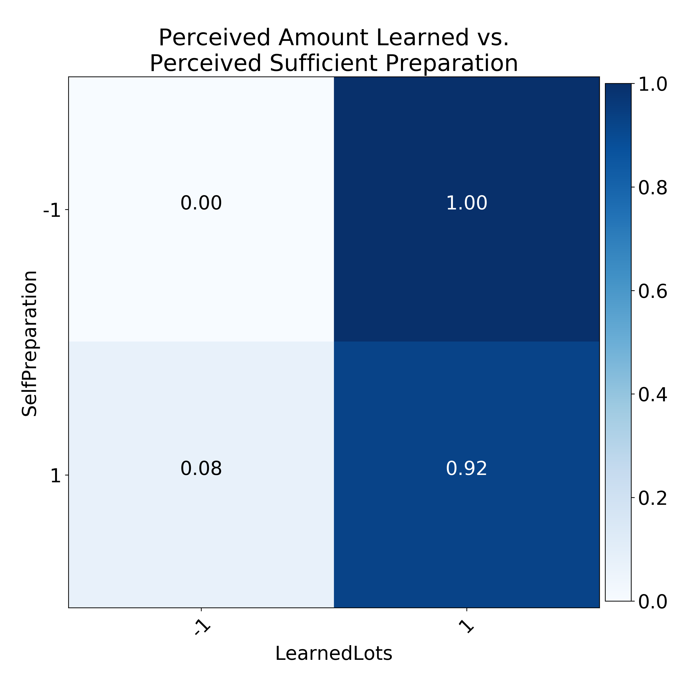

Summary
This is a summary and reflection from co-organizing the second iteration of the BC Data Workshop.
About
The BC Data Workshop was hosted June 4 – 8 on the UBC campus, co-organized with the IAM Director Brian Wetton, supported by PIMS.
The workshop featured a wide array of problem material from industry in the lower mainland, channeled as week-long data science projects led by industry mentors.
Projects
Project 1: SSR Mining
Participants analyzed over 50 GB of data for particular heavy equipment used in an ongoing mining operation to discover patterns in equipment failure for predictive maintenance strategies. While the data was very clear and well-formatted, the mining workflow was one of the more complicated elements to understand; the size of the data made the project unwieldy at times.
Project 2: St. Paul’s Hopsital
Participants sifted through a sparse collection of cytokine expression data to search for patterns between these expressions, resilience to septic shock and genetic mutation data in the patient genomes. The group may be in the process of pursuing publication of their work.
Project 3: SNC-Lavalin
Participants used current geographic data for shipping routes in the Juan de Fuca strait to predict past routes that ships have taken as a means of ascertaining more detailed knowledge about ship emissions near the lower mainland and Gulf islands.
Project 4: Comm100
Participants were faced with the challenge of generating sentiment analyses and automatic knowledge bases from a paucity of chat conversations provided by this IM platform.
Project 5: CloudPBX
By far the most involved industry mentor, CloudPBX led their team through an investigation of VoIP call quality analysis as the team investigated novel means of viewing call quality in the modern era.
Reflections
The survey responses generally indicated a positive workshop. We had approximately 50% of individuals respond to our survey. Of this, there was only one individual who did not like the workshop. Of those who enjoyed the workshop overall, the majority liked their project (65%).

These responses are complicated by the fact that we had a mentor drop out last minute - the company bailed without notice on the morning presentations, as well as the Friday student presentations and subsequent attempts to arrange meetings. In fact, we found that Mentor Support was tied in second place with Teamwork (60%) for the most important factors affecting people’s rating of project quality (falling behind only Learning Opportunities, 85%). Accordingly, it doesn’t seem surprising that the groups who typically gave lower ratings to their project quality (data withheld) were also the groups who lacked adequate mentor support and/or were observed to have a less cohesive group dynamic. We can see how some of these patterns appear by correlating the factors in project quality rating across participants.

Primarily, those who valued mentor support were likely also to value teamwork. Matching this with comments submitted by respondents suggests that mentor support and teamwork were key factors in determining the perceived project quality.
Similarly, those who valued Learning Opportunities were likely to value Background Knowledge (i.e., opportunities for learning problem-specific domain knowledge like Genetics for Project 2 or Traceroutes and Internet architecture for Project 5) and Technical Knowledge (i.e., opportunities to learn problem-specific mathematical and data scientific tools like Kalman filters for Project 3 or Natural Language Processing for Project 4).
It is interesting to note that two different mentalities might be visible in this plot. Because Learning Opportunities is negatively correlated with Complexity, it may mean (for example) that some entered the worskhop to crunch on a hard challenge, while others entered the workshop to soak up as much new knowledge as possible.
In that sense, there was one major difference between this year’s workshop and last year’s: there was no pre-workshop this year comprised of lecture content and exercises.

Of those who wanted a pre-workshop (68%), almost 70% expected there to be a pre-workshop. Only 30% of individuals did not want a pre-workshop. I think that offering a series of lecture content and exercises prior to the problem solving session would allow for greater levels of confidence when starting the project: those with tools less familiar with data science would have a chance to pick up the thread for solving their problem.
This is especially true since another major change from last year included undergraduate participants as well as participants from fields outside of mathematics. Naturally, undergraduates were less comfortable engaging in a research-type setting, especially if they didn’t already feel like they had the necessary tools or adequate mentor support.

About 30% of respondents felt un- or under-prepared for the workshop. Fortunately, nearly all respondents reported that they learned a lot during the workshop, which is by all intents the primary goal!
For now this reflection remains incomplete - to be updated at will with availability.